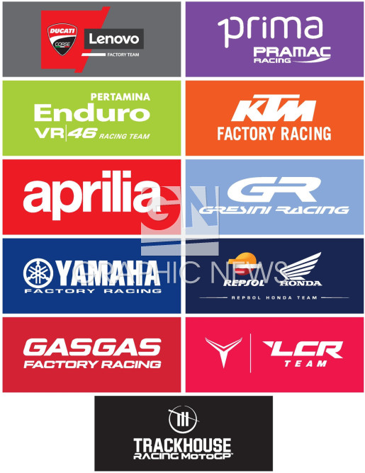
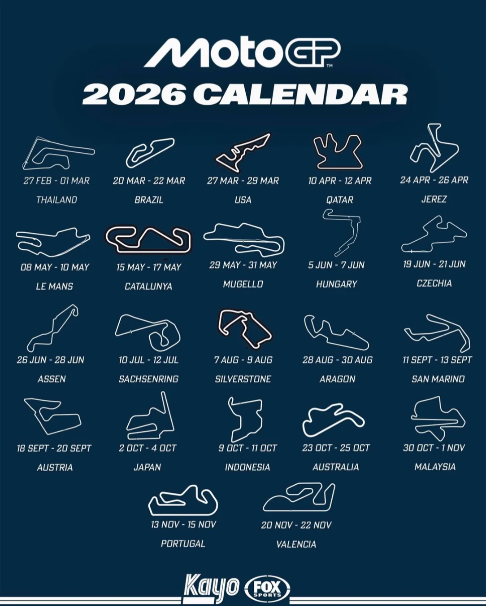

MotoGP
A FIM Gyorsasági Motoros Világbajnokságot, ismertebb nevén a MotoGP-t, 1949 óta rendezik meg minden évben. Ez a motorkerékpár-versenyzés legmagasabb szintű kategóriája, ahol a világ legtehetségesebb motorversenyzői mérik össze tudásukat.
A versenyzők rendkívül gyors, speciálisan erre a célra tervezett motorokkal versenyeznek. A sikerhez nagy bátorságra, kiváló reflexekre és rengeteg gyakorlásra van szükség.
🏁 Csapatok
A MotoGP-ben több különböző csapat versenyez egymással. Minden csapat két versenyzőt indít, akik pontokat gyűjtenek a világbajnokság során.
A csapatok különböző motorgyártókkal dolgoznak együtt, és folyamatosan fejlesztik motorjaikat, hogy minél jobb teljesítményt érjenek el a versenyeken.
- Monster Energy Yamaha MotoGP
- Repsol Honda Team
- Team Suzuki Ecstar
- Pramac Racing
- Red Bull KTM Factory Racing
- Aprilia Racing Team Gresini
- LCR Honda Castrol
- RNF MotoGP Team
- WithU Yamaha RNF MotoGP Team

🌍 Bajnokság
A MotoGP a motorkerékpársport legmagasabb szintű kategóriája, amelyet a Nemzetközi Motorkerékpáros Szövetség (FIM) szervez. A sorozatban egy-egy versenyhétvége során szombatonként egy rövidebb Sprintversenyt, vasárnaponként pedig a hagyományos Főfutamot rendezik meg, ahol a pilóták pontokat gyűjtenek a világbajnoki címért.

🏆 Versenyhétvége
Egy MotoGP-hétvége több különböző programból áll. A versenyzők szabadedzéseken készülnek fel a futamokra, majd az időmérő edzésen próbálják megszerezni a lehető legjobb rajtpozíciót.
A szombati Sprintverseny rövidebb, de rendkívül izgalmas futam, ahol a versenyzők már fontos bajnoki pontokért küzdenek. Vasárnap következik a főfutam, amelyen eldől, hogy ki lesz a hétvége győztese.
🔥 A MotoGP különlegességei
A MotoGP egyik legizgalmasabb része a látványos előzések, a nagy sebesség és a szoros küzdelem a versenyzők között. A motorosoknak kanyarokban és egyenesekben is maximális koncentrációra van szükségük.
A rajongók számára minden verseny új izgalmakat tartogat, hiszen az utolsó körökben is megváltozhat a végeredmény. Ez teszi a MotoGP-t a világ egyik legnépszerűbb motorsport-sorozatává.